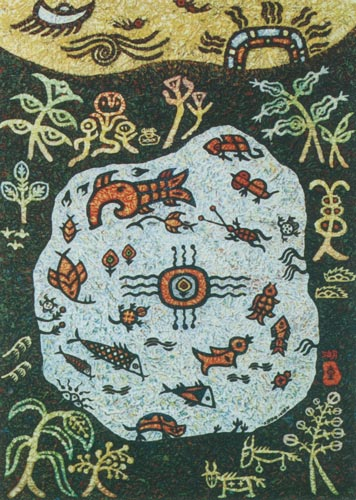

Details
Vernissage: 28. November 1997
Einführende Worte: Jia Jianxing (Botschaftsrat für Kultur der Botschaft der VR China)
Die Ausstellung war bis Ende Februar 1998 zu besichtigen.

Vernissage: 28. November 1997
Einführende Worte: Jia Jianxing (Botschaftsrat für Kultur der Botschaft der VR China)
Die Ausstellung war bis Ende Februar 1998 zu besichtigen.